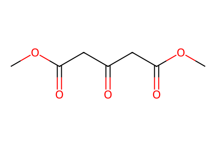
COC(=O)CC(=O)CC(=O)OCAvailable SI preparative network: monomers, bacillosporin C, peracetate18, isolated oxidation/cyclization controls and selected electrolysis variants. Main article absent. Facts compiled deterministically; independent review pending.
完整 JSON · 逐步 CSV · 路线序列 · SDF · HRMS 核对
| 事件 | 分子连接 | 报告产率 | Canonical reaction SMILES |
|---|---|---|---|
| A01 | S1 → S2 | S2: 58% | COC(=O)CC(=O)CC(=O)OC>>COC(=O)Cc1cc(O)c(C(=O)O)c(O)c1C(=O)O |
| A02 | S2 → S3 | not reported | COC(=O)Cc1cc(O)c(C(=O)O)c(O)c1C(=O)O>>COC(=O)Cc1cc(O)cc(O)c1 |
| A03 | S3 → 4 | not reported | COC(=O)Cc1cc(O)cc(O)c1>>COC(=O)Cc1cc(O[Si](C)(C)C(C)(C)C)cc(O[Si](C)(C)C(C)(C)C)c1 |
| A04 | 4 + 2-butynoic-acid → 5 + 6 | 5: 85%; 6: 6% | CC#CC(=O)O.COC(=O)Cc1cc(O[Si](C)(C)C(C)(C)C)cc(O[Si](C)(C)C(C)(C)C)c1>>CC#C/C(O)=C(/C(=O)OC)c1cc(O[Si](C)(C)C(C)(C)C)cc(O[Si](C)(C)C(C)(C)C)c1.CC#CC(=O)O/C(C#CC)=C(\C(=O)OC)c1cc(O[Si](C)(C)C(C)(C)C)cc(O[Si](C)(C)C(C)(C)C)c1 |
| A04-scale | 4 + 2-butynoic-acid → 5 + 6 | 5: 58%; 6: 30% | CC#CC(=O)O.COC(=O)Cc1cc(O[Si](C)(C)C(C)(C)C)cc(O[Si](C)(C)C(C)(C)C)c1>>CC#C/C(O)=C(/C(=O)OC)c1cc(O[Si](C)(C)C(C)(C)C)cc(O[Si](C)(C)C(C)(C)C)c1.CC#CC(=O)O/C(C#CC)=C(\C(=O)OC)c1cc(O[Si](C)(C)C(C)(C)C)cc(O[Si](C)(C)C(C)(C)C)c1 |
| A05 | 6 → 5 | 5: 72% | CC#CC(=O)O/C(C#CC)=C(\C(=O)OC)c1cc(O[Si](C)(C)C(C)(C)C)cc(O[Si](C)(C)C(C)(C)C)c1>>CC#C/C(O)=C(/C(=O)OC)c1cc(O[Si](C)(C)C(C)(C)C)cc(O[Si](C)(C)C(C)(C)C)c1 |
| A06 | 5 → 7 | 7: 100% | CC#C/C(O)=C(/C(=O)OC)c1cc(O[Si](C)(C)C(C)(C)C)cc(O[Si](C)(C)C(C)(C)C)c1>>COC(=O)c1c(O)cc(C)c2c(O[Si](C)(C)C(C)(C)C)cc(O[Si](C)(C)C(C)(C)C)cc12 |
| B01 | 7 → 1 + 9 | 1: 87%; 9: 6% | COC(=O)c1c(O)cc(C)c2c(O[Si](C)(C)C(C)(C)C)cc(O[Si](C)(C)C(C)(C)C)cc12>>Cc1cc(O)c2c3c(c(O)cc(O)c13)COC2=O.Cc1cc(O)c2c3c(c(O[Si](C)(C)C(C)(C)C)cc(O[Si](C)(C)C(C)(C)C)c13)COC2=O |
| B02 | 7 → 1 + 9 + 10 | 1: 26%; 9: 19%; 10: 26% | COC(=O)c1c(O)cc(C)c2c(O[Si](C)(C)C(C)(C)C)cc(O[Si](C)(C)C(C)(C)C)cc12>>Cc1cc(O)c2c3c(c(O)cc(O)c13)COC2=O.Cc1cc(O)c2c3c(c(O[Si](C)(C)C(C)(C)C)cc(O)c13)COC2=O.Cc1cc(O)c2c3c(c(O[Si](C)(C)C(C)(C)C)cc(O[Si](C)(C)C(C)(C)C)c13)COC2=O |
| B03 | 7 → S4 | S4: 95% | COC(=O)c1c(O)cc(C)c2c(O[Si](C)(C)C(C)(C)C)cc(O[Si](C)(C)C(C)(C)C)cc12>>COC(=O)c1c(OC)cc(C)c2c(O[Si](C)(C)C(C)(C)C)cc(O[Si](C)(C)C(C)(C)C)cc12 |
| B04 | 7 → S5 | S5: 100% | COC(=O)c1c(O)cc(C)c2c(O[Si](C)(C)C(C)(C)C)cc(O[Si](C)(C)C(C)(C)C)cc12>>COC(=O)c1c(O)cc(C)c2c(O)cc(O)cc12 |
| B05 | S5 → 1 | 1: 31% | COC(=O)c1c(O)cc(C)c2c(O)cc(O)cc12>>Cc1cc(O)c2c3c(c(O)cc(O)c13)COC2=O |
| B06 | S4 → S7 | S7: 86% | COC(=O)c1c(OC)cc(C)c2c(O[Si](C)(C)C(C)(C)C)cc(O[Si](C)(C)C(C)(C)C)cc12>>COc1cc(C)c2c(O)cc(O)c3c2c1C(=O)OC3 |
| B07 | 10 → S8 | S8: 60% | Cc1cc(O)c2c3c(c(O[Si](C)(C)C(C)(C)C)cc(O)c13)COC2=O>>COc1cc(O[Si](C)(C)C(C)(C)C)c2c3c(c(O)cc(C)c13)C(=O)OC2 |
| B08 | S8 → 13 | 13: 100% | COc1cc(O[Si](C)(C)C(C)(C)C)c2c3c(c(O)cc(C)c13)C(=O)OC2>>COc1cc(O)c2c3c(c(O)cc(C)c13)C(=O)OC2 |
| C01 | 1 → 12-cation | 12-cation: 17% | Cc1cc(O)c2c3c(c(O)cc(O)c13)COC2=O>>Cc1cc(O)c2c3c1C(O)=C([I+]c1ccccc1)C(=O)C3(OCC(F)(F)F)COC2=O |
| C02 | 13 → 14 + 15 | 14: 26%; 15: 22% | COc1cc(O)c2c3c(c(O)cc(C)c13)C(=O)OC2>>COC1=CC(=O)C2(O)COC(=O)c3c(O)cc(C)c1c32.COC1=CC(=O)C2(c3ccc(I)cc3)COC(=O)c3c(O)cc(C)c1c32 |
| C03 | 13 → 16 | 16: 80% | COc1cc(O)c2c3c(c(O)cc(C)c13)C(=O)OC2>>COC1=CC(=O)c2coc(=O)c3c(O)cc(C)c1c23 |
| C04 | 13 → 17 + 16 | 17: 27%; 16: 30% | COc1cc(O)c2c3c(c(O)cc(C)c13)C(=O)OC2>>COC1=CC(=O)c2coc(=O)c3c(O)cc(C)c1c23.COc1cc(O)c2c3c(c(O)cc(C)c13)C(=O)OC2=O |
| C05 | 13 + dimedone → S9 + S10 + 14 + 15 | S9: 13%; S10: 21%; 14: 10%; 15: 15% | CC1(C)CC(=O)CC(=O)C1.COc1cc(O)c2c3c(c(O)cc(C)c13)C(=O)OC2>>COC1=CC(=O)C2(O)COC(=O)c3c(O)cc(C)c1c32.COC1=CC(=O)C2(c3ccc(I)cc3)COC(=O)c3c(O)cc(C)c1c32.COC1=CC(=O)C23OC4=C(C(=O)CC(C)(C)C4)C2OC(=O)c2c(O)cc(C)c1c23.COc1cc2c3c4c(c(O)cc(C)c14)C(=O)OC3C1=C(CC(C)(C)CC1=O)O2 |
| C06 | 13 → S11 + 16 | S11: 29%; 16: 38% | COc1cc(O)c2c3c(c(O)cc(C)c13)C(=O)OC2>>COC1=CC(=O)c2coc(=O)c3c(O)cc(C)c1c23.COc1cc2c3c4c(c(O)cc(C)c14)C(=O)OC3CC(C)(C)O2 |
| C07 | 13 → 16 | 16: 33% | COc1cc(O)c2c3c(c(O)cc(C)c13)C(=O)OC2>>COC1=CC(=O)c2coc(=O)c3c(O)cc(C)c1c23 |
| D01 | 1 → 2 | 2: 45% | Cc1cc(O)c2c3c(c(O)cc(O)c13)COC2=O>>Cc1cc(O)c2c3c1C(=O)C[C@]1(O)Oc4c(c(O)c5c6c(c(O)cc(C)c46)C(=O)OC5)[C@]31COC2=O |
| D02 | 1 → 2 | 2: 84% | Cc1cc(O)c2c3c(c(O)cc(O)c13)COC2=O>>Cc1cc(O)c2c3c1C(=O)C[C@]1(O)Oc4c(c(O)c5c6c(c(O)cc(C)c46)C(=O)OC5)[C@]31COC2=O |
| D03-scale1 | 1 → 2 | 2: 52% | Cc1cc(O)c2c3c(c(O)cc(O)c13)COC2=O>>Cc1cc(O)c2c3c1C(=O)C[C@]1(O)Oc4c(c(O)c5c6c(c(O)cc(C)c46)C(=O)OC5)[C@]31COC2=O |
| D03-scale2 | 1 → 2 | 2: 50% | Cc1cc(O)c2c3c(c(O)cc(O)c13)COC2=O>>Cc1cc(O)c2c3c1C(=O)C[C@]1(O)Oc4c(c(O)c5c6c(c(O)cc(C)c46)C(=O)OC5)[C@]31COC2=O |
| D-CPE0.5 | 1 → 2 | 2: 42% | Cc1cc(O)c2c3c(c(O)cc(O)c13)COC2=O>>Cc1cc(O)c2c3c1C(=O)C[C@]1(O)Oc4c(c(O)c5c6c(c(O)cc(C)c46)C(=O)OC5)[C@]31COC2=O |
| D-CPE0.4 | 1 → 2 | 2: 8% | Cc1cc(O)c2c3c(c(O)cc(O)c13)COC2=O>>Cc1cc(O)c2c3c1C(=O)C[C@]1(O)Oc4c(c(O)c5c6c(c(O)cc(C)c46)C(=O)OC5)[C@]31COC2=O |
| D-trap1 | 1 → 2 | 2: 46% | Cc1cc(O)c2c3c(c(O)cc(O)c13)COC2=O>>Cc1cc(O)c2c3c1C(=O)C[C@]1(O)Oc4c(c(O)c5c6c(c(O)cc(C)c46)C(=O)OC5)[C@]31COC2=O |
| D-trap2 | 1 → 2 | 2: 63% | Cc1cc(O)c2c3c(c(O)cc(O)c13)COC2=O>>Cc1cc(O)c2c3c1C(=O)C[C@]1(O)Oc4c(c(O)c5c6c(c(O)cc(C)c46)C(=O)OC5)[C@]31COC2=O |
| D-trap3 | 1 → 2 | 2: 82% | Cc1cc(O)c2c3c(c(O)cc(O)c13)COC2=O>>Cc1cc(O)c2c3c1C(=O)C[C@]1(O)Oc4c(c(O)c5c6c(c(O)cc(C)c46)C(=O)OC5)[C@]31COC2=O |
| D-trap4 | 1 → 2 | 2: 74% | Cc1cc(O)c2c3c(c(O)cc(O)c13)COC2=O>>Cc1cc(O)c2c3c1C(=O)C[C@]1(O)Oc4c(c(O)c5c6c(c(O)cc(C)c46)C(=O)OC5)[C@]31COC2=O |
| D04 | 2 → 18 | 18: 56% | Cc1cc(O)c2c3c1C(=O)C[C@]1(O)Oc4c(c(O)c5c6c(c(O)cc(C)c46)C(=O)OC5)[C@]31COC2=O>>CC(=O)OC1=C[C@]2(OC(C)=O)Oc3c(c(OC(C)=O)c4c5c(c(OC(C)=O)cc(C)c35)C(=O)OC4)[C@@]23COC(=O)c2c(OC(C)=O)cc(C)c1c23 |
| B09 | 7 → 9 + 11 | 9: 4%; 11: 6% | COC(=O)c1c(O)cc(C)c2c(O[Si](C)(C)C(C)(C)C)cc(O[Si](C)(C)C(C)(C)C)cc12>>COCC(=O)Oc1cc(C)c2c(O[Si](C)(C)C(C)(C)C)cc(O[Si](C)(C)C(C)(C)C)c3c2c1C(=O)OC3.Cc1cc(O)c2c3c(c(O[Si](C)(C)C(C)(C)C)cc(O[Si](C)(C)C(C)(C)C)c13)COC2=O |
| B10 | 7 → S1-BP1 + S1-BP2 + S1-BP3 | S1-BP1: 9%; S1-BP2: 3%; S1-BP3: 6% | COC(=O)c1c(O)cc(C)c2c(O[Si](C)(C)C(C)(C)C)cc(O[Si](C)(C)C(C)(C)C)cc12>>COC(=O)c1c(O)cc(C)c2c(O)cc(O[Si](C)(C)C(C)(C)C)cc12.COCC(=O)Oc1cc(C)c2c(O)cc(O[Si](C)(C)C(C)(C)C)cc2c1C(=O)OC.COCC(=O)Oc1cc(C)c2c(O[Si](C)(C)C(C)(C)C)cc(O[Si](C)(C)C(C)(C)C)cc2c1C(=O)OC |
| B11 | 7 → 1 + 9 + 10 + S2-BP1 + S5 + S6 | 1: 50%; 9: 11%; 10: 3%; S2-BP1: 1%; S5: 2%; S6: 8% | COC(=O)c1c(O)cc(C)c2c(O[Si](C)(C)C(C)(C)C)cc(O[Si](C)(C)C(C)(C)C)cc12>>COC(=O)c1c(O)cc(C)c2c(O)cc(O)c(CO)c12.COC(=O)c1c(O)cc(C)c2c(O)cc(O)cc12.Cc1cc(O)c2c3c(c(O)c(Cc4c(O)c5c6c(c(O[Si](C)(C)C(C)(C)C)cc(O[Si](C)(C)C(C)(C)C)c6c4C)COC5=O)c(O)c13)COC2=O.Cc1cc(O)c2c3c(c(O)cc(O)c13)COC2=O.Cc1cc(O)c2c3c(c(O[Si](C)(C)C(C)(C)C)cc(O)c13)COC2=O.Cc1cc(O)c2c3c(c(O[Si](C)(C)C(C)(C)C)cc(O[Si](C)(C)C(C)(C)C)c13)COC2=O |

COC(=O)CC(=O)CC(=O)OC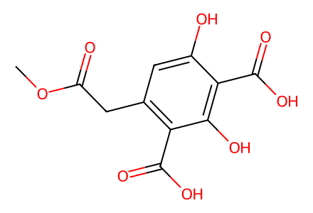
COC(=O)Cc1cc(O)c(C(=O)O)c(O)c1C(=O)O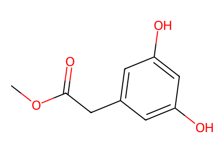
COC(=O)Cc1cc(O)cc(O)c1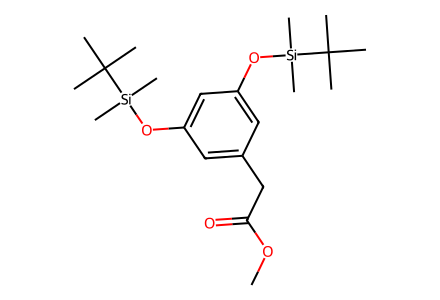
COC(=O)Cc1cc(O[Si](C)(C)C(C)(C)C)cc(O[Si](C)(C)C(C)(C)C)c1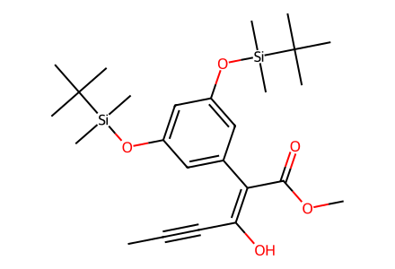
CC#C/C(O)=C(/C(=O)OC)c1cc(O[Si](C)(C)C(C)(C)C)cc(O[Si](C)(C)C(C)(C)C)c1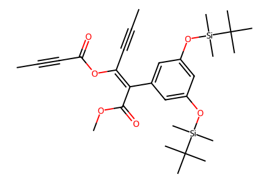
CC#CC(=O)O/C(C#CC)=C(\C(=O)OC)c1cc(O[Si](C)(C)C(C)(C)C)cc(O[Si](C)(C)C(C)(C)C)c1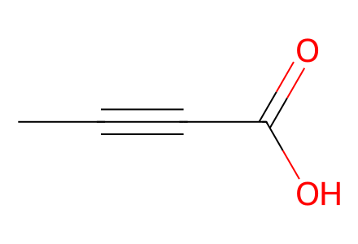
CC#CC(=O)O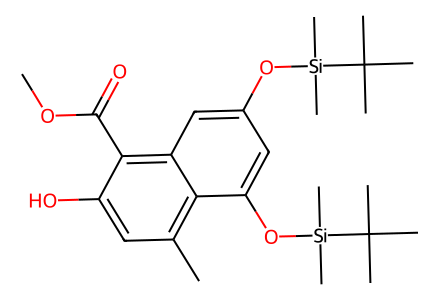
COC(=O)c1c(O)cc(C)c2c(O[Si](C)(C)C(C)(C)C)cc(O[Si](C)(C)C(C)(C)C)cc12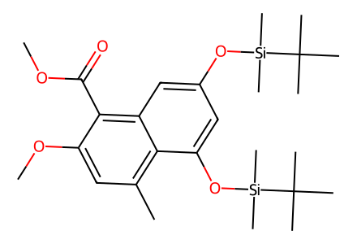
COC(=O)c1c(OC)cc(C)c2c(O[Si](C)(C)C(C)(C)C)cc(O[Si](C)(C)C(C)(C)C)cc12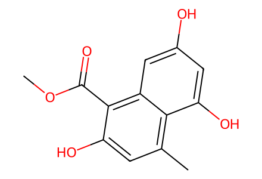
COC(=O)c1c(O)cc(C)c2c(O)cc(O)cc12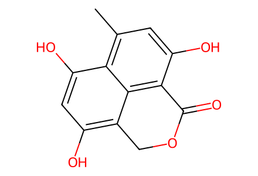
Cc1cc(O)c2c3c(c(O)cc(O)c13)COC2=O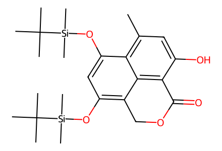
Cc1cc(O)c2c3c(c(O[Si](C)(C)C(C)(C)C)cc(O[Si](C)(C)C(C)(C)C)c13)COC2=O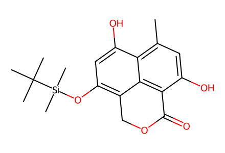
Cc1cc(O)c2c3c(c(O[Si](C)(C)C(C)(C)C)cc(O)c13)COC2=O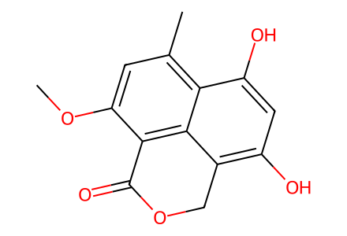
COc1cc(C)c2c(O)cc(O)c3c2c1C(=O)OC3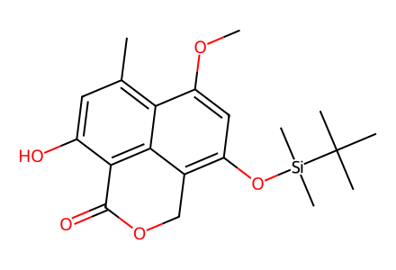
COc1cc(O[Si](C)(C)C(C)(C)C)c2c3c(c(O)cc(C)c13)C(=O)OC2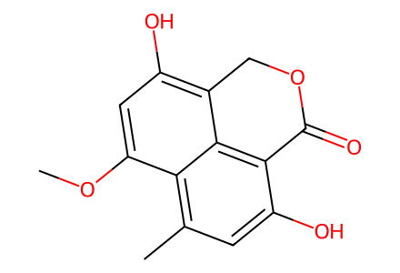
COc1cc(O)c2c3c(c(O)cc(C)c13)C(=O)OC2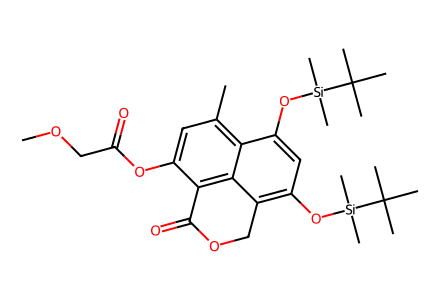
COCC(=O)Oc1cc(C)c2c(O[Si](C)(C)C(C)(C)C)cc(O[Si](C)(C)C(C)(C)C)c3c2c1C(=O)OC3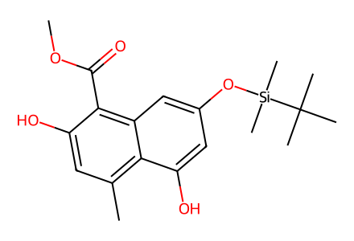
COC(=O)c1c(O)cc(C)c2c(O)cc(O[Si](C)(C)C(C)(C)C)cc12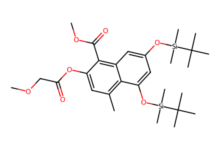
COCC(=O)Oc1cc(C)c2c(O[Si](C)(C)C(C)(C)C)cc(O[Si](C)(C)C(C)(C)C)cc2c1C(=O)OC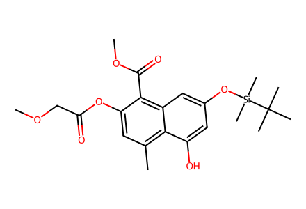
COCC(=O)Oc1cc(C)c2c(O)cc(O[Si](C)(C)C(C)(C)C)cc2c1C(=O)OC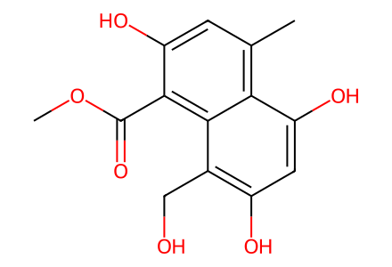
COC(=O)c1c(O)cc(C)c2c(O)cc(O)c(CO)c12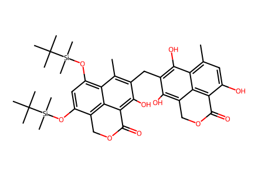
Cc1cc(O)c2c3c(c(O)c(Cc4c(O)c5c6c(c(O[Si](C)(C)C(C)(C)C)cc(O[Si](C)(C)C(C)(C)C)c6c4C)COC5=O)c(O)c13)COC2=O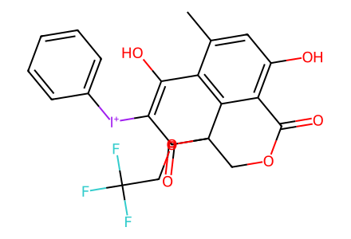
Cc1cc(O)c2c3c1C(O)=C([I+]c1ccccc1)C(=O)C3(OCC(F)(F)F)COC2=O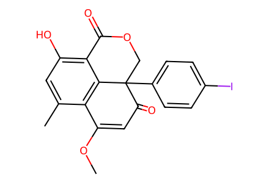
COC1=CC(=O)C2(c3ccc(I)cc3)COC(=O)c3c(O)cc(C)c1c32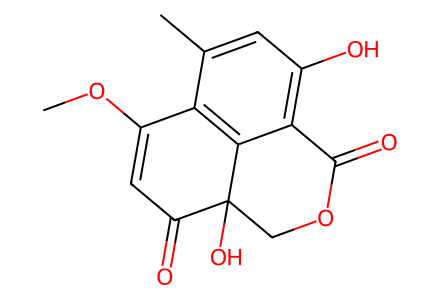
COC1=CC(=O)C2(O)COC(=O)c3c(O)cc(C)c1c32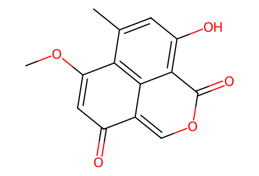
COC1=CC(=O)c2coc(=O)c3c(O)cc(C)c1c23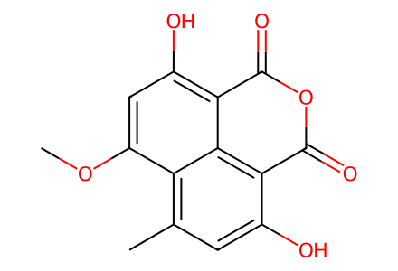
COc1cc(O)c2c3c(c(O)cc(C)c13)C(=O)OC2=O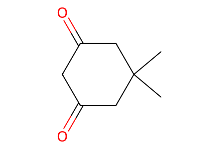
CC1(C)CC(=O)CC(=O)C1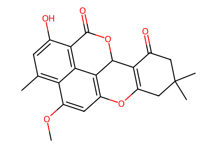
COc1cc2c3c4c(c(O)cc(C)c14)C(=O)OC3C1=C(CC(C)(C)CC1=O)O2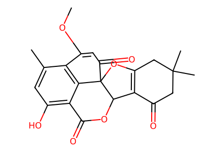
COC1=CC(=O)C23OC4=C(C(=O)CC(C)(C)C4)C2OC(=O)c2c(O)cc(C)c1c23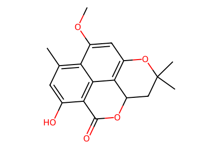
COc1cc2c3c4c(c(O)cc(C)c14)C(=O)OC3CC(C)(C)O2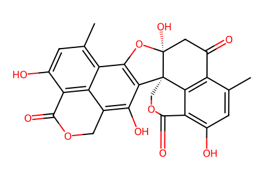
Cc1cc(O)c2c3c1C(=O)C[C@]1(O)Oc4c(c(O)c5c6c(c(O)cc(C)c46)C(=O)OC5)[C@]31COC2=O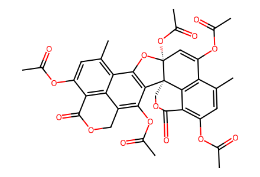
CC(=O)OC1=C[C@]2(OC(C)=O)Oc3c(c(OC(C)=O)c4c5c(c(OC(C)=O)cc(C)c35)C(=O)OC4)[C@@]23COC(=O)c2c(OC(C)=O)cc(C)c1c23